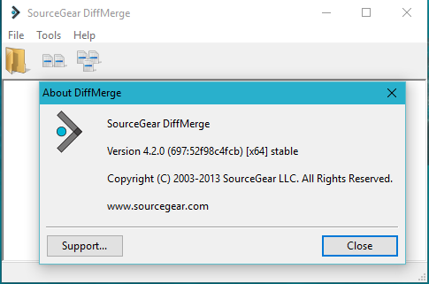

ACP provides a very nifty web page interface to allow users to run plans and do various tasks within ACP.
This web page is coded in the file
Doc Root/author.html. The ACP Authoring environment allows
users to modify this file, adding capabilities in the form of modified or new tiddlers.
You can also rearrange the existing menu entries, or add new menu entries for your new tiddlers. This is a very powerful
capability.
However: Each time ACP is updated to the next release, the author.html file update is a bit of a pain.
As part of the ACP update process the current author.html file (containing hours of your elegant customizations)
is copied to a backup name (something like
Doc Root/author-backups/author.bk-20150923_170957.html.).
I will refer to this file as the
Customized file, since it contains your valuable customization changes.
The updater then installs a brand new clean author.html file with whatever
cool updates have been made by Bob. I will refer to this file as the
ACP file.

You now have the task of re-applying your changes from the Customization file into the new author.html.
ACP provides a couple of tools for extracting modified tiddlers from your author.html file and applying them to the new
file. However, a)
they only apply to the tiddlers, and b) they need to be run from a command shell or a batch file.
I have not had much success using these tools.
The update process used by some ACP users involves using a diff tool (I now use DiffMerge as shown here). The process entails two updates,
one for the tiddler definitions and
one for the Main Menu structure. It works, but I tend to mess things up every so often. In addition, it involves a separate manual
backup of the Main Menu structure from within the authoring tool.